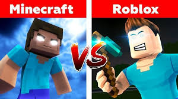
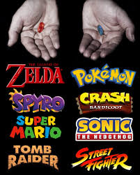

Los videojuegos han dejado de ser un simple pasatiempo para convertirse en una de las formas de entretenimiento más influyentes del mundo. Desde las aventuras gráficas clásicas hasta los mundos abiertos hiperrealistas de hoy en día, los videojuegos han evolucionado tanto técnica como narrativamente, ofreciendo experiencias inmersivas que rivalizan con el cine y la literatura. Cada día, millones de personas se conectan para explorar mundos virtuales, competir en torneos internacionales de eSports o simplemente relajarse con sus juegos favoritos. Además, el desarrollo de tecnologías como la realidad virtual, la inteligencia artificial y el juego en la nube está llevando a la industria a nuevas fronteras, donde la interacción y la creatividad no tienen límites. En nuestra página, encontrarás noticias actualizadas, análisis, reseñas, y artículos sobre los títulos más esperados, desarrolladores destacados y tendencias que están marcando el futuro del gaming. Ya seas un jugador casual, un fanático del competitivo o un desarrollador en formación, este es tu lugar.

Los videojuegos ya no son solo una forma de diversión: se han convertido en una poderosa herramienta social, educativa y cultural. En la última década, han demostrado su capacidad para conectar personas, fomentar habilidades cognitivas, promover el trabajo en equipo y hasta generar conciencia sobre temas importantes como el cambio climático, la salud mental o la inclusión. Títulos como Life is Strange, Celeste o That Dragon, Cancer han demostrado que los videojuegos también pueden contar historias profundas, emocionales y transformadoras. Al mismo tiempo, plataformas multijugador como Fortnite, Minecraft o Roblox han creado comunidades globales donde millones de jugadores interactúan, crean y aprenden juntos. Además, la gamificación ha sido adoptada por empresas, escuelas y organizaciones para motivar y enseñar de manera más efectiva. Así, los videojuegos están redefiniendo la forma en que aprendemos, nos comunicamos y comprendemos el mundo que nos rodea. En nuestra web exploramos cómo los videojuegos están influyendo positivamente en la sociedad y por qué son mucho más que un simple juego.
En plena era de gráficos ultra realistas y experiencias inmersivas, los videojuegos retro están viviendo un renacimiento inesperado pero poderoso. Clásicos de los años 80 y 90 como Super Mario Bros., The Legend of Zelda, Sonic the Hedgehog o Street Fighter siguen más vivos que nunca, no solo en sus versiones originales, sino también en remakes, remasterizaciones y nuevas entregas inspiradas en su estilo pixelado y mecánicas simples pero adictivas. Este regreso no solo se debe a la nostalgia de quienes crecieron con estas joyas, sino también al interés de nuevas generaciones que descubren en ellos una jugabilidad directa y un encanto atemporal. Consolas mini como la NES Classic, plataformas como Steam o la eShop de Nintendo, y servicios de suscripción como Xbox Game Pass han facilitado el acceso a estos títulos legendarios. Además, muchos desarrolladores indie están creando juegos con estética retro y mecánicas clásicas, fusionando lo mejor del pasado con ideas frescas del presente. Es una tendencia que no solo celebra la historia del gaming, sino que demuestra que una buena jugabilidad nunca pasa de moda.
